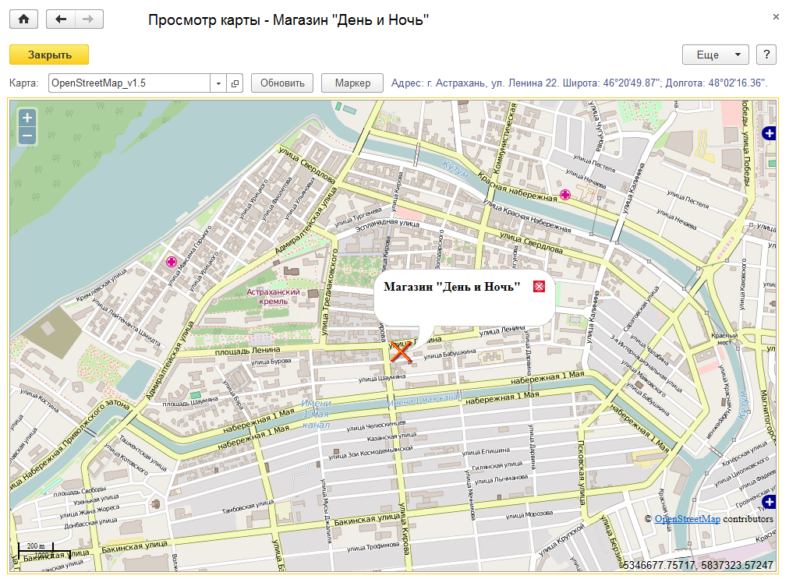
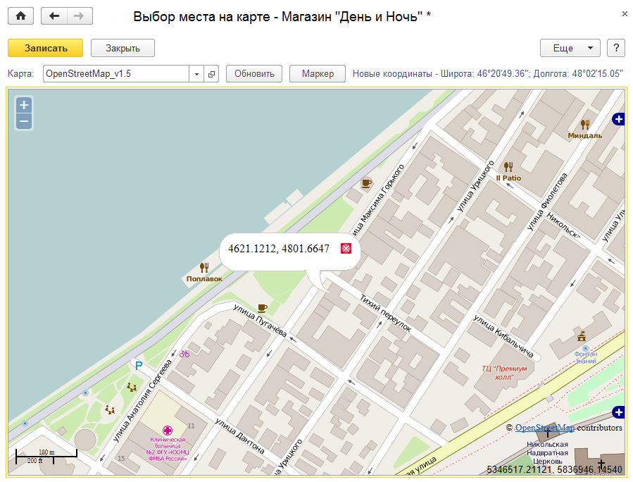

Просмотр карты
Обработка Просмотр карты предназначена для просмотра местоположения торговой точки на карте.
Открыть обработку Выбор координат можно несколькими способами:
-
В документе
План посещений установить курсор в ячейке на пересечении строки с наименованием торговой точки и столбца с датой посещения, вызвать контекстное меню и выбрать пункт
Показать на карте (флажок
Использовать порядок должен быть снят).
-
В документе
План посещений в колонке с наименованием торговой точки вызвать контекстное меню и выбрать пункт
Показать на карте (в этом случае флажок
Использовать порядок может быть установлен).
-
-
В обработке
Выбор координат, для указания координат местоположения торговой точки на карте. Для вызова обработки необходимо из карточки торговой точки перейти в окно
Координаты (открывается по кнопке выбора

в поле
Координаты) и нажать на кнопку
Указать местоположение на карте.
Для просмотра сведений о координатах торговой точки должно быть установлено Интернет-соединение.
Окно обработки "Просмотр карты"
Окно обработки "Выбор координат"
Как указать местоположение торговой точки на карте?
В открывшемся окне обработки отобразится карта, на которой маркером будет отмечена торговая точка. При нажатии на маркер появится информация о названии торговой точки.

Просмотр местоположения торговой точки осуществляется на карте, выбранной в поле Карта. Значение выбирается из справочника Онлайн-карты.
В правой части окна над областью с картой отображается адрес торговой точки и сведения о ее координатах.
С помощью кнопки Обновить можно обновить состояние карты, если Интернет-соединение было нестабильным и какая-то часть карты не загрузилась.
Кнопка Маркер позволяет показать маркер в центре карты с оптимальным масштабом.
В открывшемся окне отобразится карта, на которой можно задать координаты для торговой точки. Для просмотра и редактирования сведений о координатах торговой точки должно быть установлено Интернет-соединение.

Просмотр местоположения торговой точки осуществляется на карте, выбранной в поле Карта. Значение выбирается из справочника Онлайн-карты.
В правой части окна над областью с картой отображается адрес торговой точки и сведения о ее координатах.
С помощью кнопки Обновить можно обновить состояние карты, если Интернет-соединение было нестабильным и какая-то часть карты не загрузилась.
Кнопка Маркер позволяет показать маркер в центре карты с оптимальным масштабом.
Для того чтобы задать координаты для торговой точки необходимо отметить точку на карте с помощью мыши. Для выбранной точки отобразятся координаты. Чтобы записать эти координаты в карточку торговой точки необходимо нажать на кнопку Записать.
